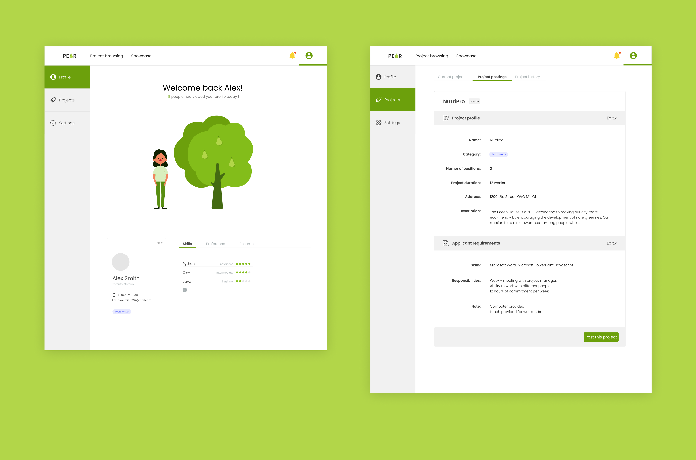

Project PEAR
- Name
- PEAR
- Type
- Non-profit
- Tools
- Illustrator, Figma
- Timeline
- July 2019 - Present
- My Role
- Branding, UI/UX Design, Illustration
- Team
- Jacqueline Ji (UI/UX Designer, Illustrator),
Chloe Sham (Developer),
Crystal Yip (Developer),
Sophia Sun (Developer)

What problems are we trying to solve?
- 1. Non-profits have no access to talents due to the lack of sufficient funds and resources
- 2. Students that try to break into industries with no working experience
Why is it important?
- Being someone who is both the creator of this product and the targeted users, I understand the struggle students try to seek opportunities to learn and grow. Meanwhile finding a team with responsible people is already hard enough.
- After reaching out to non-profits, we learned that their main struggle is not having enough of money to hire talents.
- We want to create a sustainable cycle between professional and social development by building a global community of non-profits and students
How does it work?
- 1. Upper year students help non-profits analyze problems, bottlenecks and come up with solution
- 2. Upper-year students with project managment experience help break down solutions into small projects
- 3. Group of students execute projects under the supervison of a student project manager
Wireframes
- These two different versions of wireframes are slightly different from the traditional wireframes I created. As after working with the team, I figured most teammates prefered high fidelity wireframes as I received more feedbacks the more details I put in.
Previous versions (July)
version 1 (left)
- Version 1 was abandoned as I was given the feedback that it looked too dull. We wanted to create a website that is pleasant to use
version 2 (right)
- I then created version 2 where more graphics were added with more colours. This version was eventually abandoned as
- 1. we thought the style was not serious enough for the purpose of our website
- 2. the elements weren't consistant throughout the whole site
Changes I made
- 1. eliminate the number of colours used by creating a design system to keep all sections more coherent
- 2. redesign the characters to keep all graphic elements the same style
Mockup - Student landing page (Oct)
I created this mockup after joining Starterhacks design team where I learned a lot of new techniques that greatly influenced my design decisions.

Why the 3 steps?
- The first step is made to help non-profits look for solutions. We talked to numerous non-profits and they don't tend to know what kind of position to hire and what kind of projects to post. We aimed to make the platform more accessible through making sure there is a person that assists them through the whole process
- A project manager is essential to make sure the deadlines and met and the team is comunicating well with the non-profits.
Other design decisions?
- - The sample project section is prioritize as it shows the type of projects students would be working on. I used different colours for the category tags as it helped the student establish the association of colours with the category, which make it easier for the users to browse the projects based off the categories
- - In the mobile verson I took out the right button and replaced with the dots indicating it can be swipe to the left for more projects.
Experiment sections
Colour Experiments
Button Experiments

More mockups
What's next
PEAR is still an work in progress and we are working on implementing the website. There might be more changes to be made as we are still doing more research. Tell us if you have any feedback, we would really appreciate it!
Send a feedback